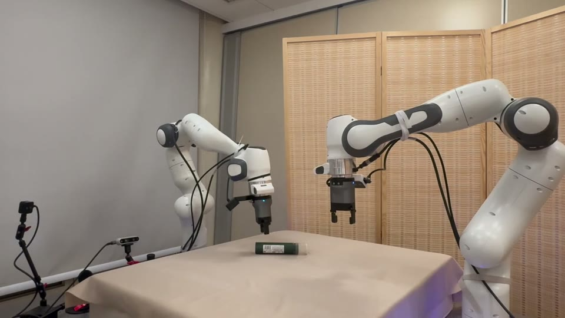
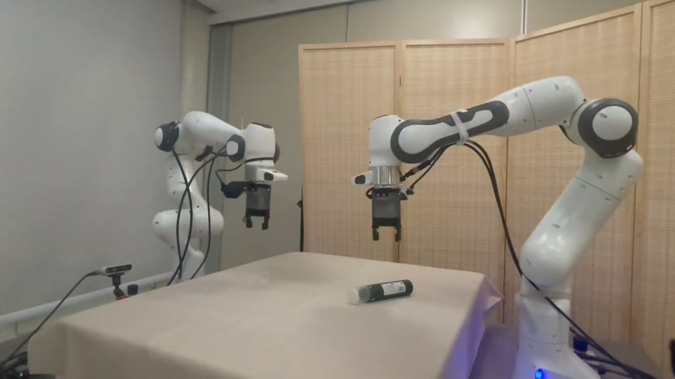
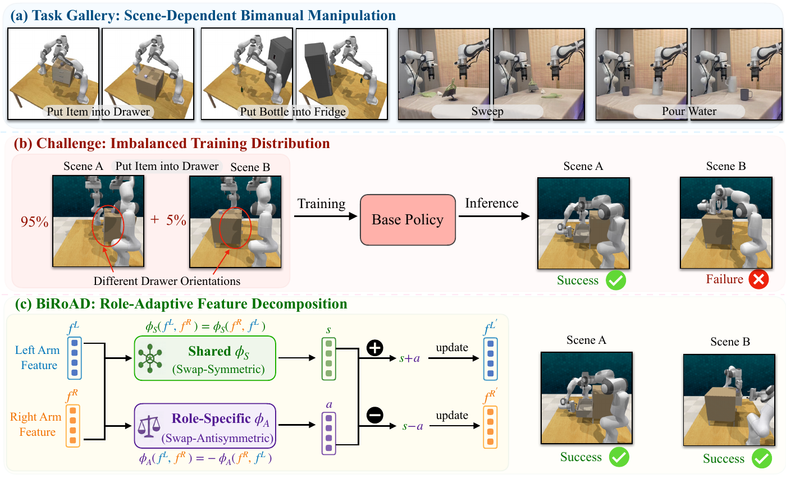
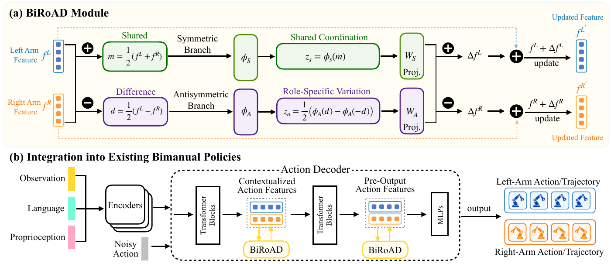

Decompose
Map left- and right-arm features to their mean and signed difference.
m = ½ (fL + fR)
d = ½ (fL − fR)
d = ½ (fL − fR)
Bimanual role-adaptive decomposition

Scene configuration A
Scene configuration B01 / Overview
A modular representation framework for scene-conditioned role adaptation.
BiRoAD · Overview and experimental demonstrations · 3 min 51 sec
Bimanual manipulation requires policies that coordinate two arms while adapting their functional roles to scene geometry, object configuration, and task context. Uneven role distributions in demonstrations can limit generalization to underrepresented arm–role configurations.
BiRoAD decomposes paired arm trajectory or action-token features into swap-symmetric components for shared coordination and swap-antisymmetric components for role-specific distinctions. The components are recomposed as residual updates to the original representations.
This modular transformation preserves the policy inputs and imitation-learning objective, and requires no manually defined role labels. Experiments across balanced and imbalanced role distributions show improved robustness over corresponding base policies, with notable gains on underrepresented configurations.
Read the full paper
02 / Method
Decompose paired features, learn complementary components, and recompose them as residual updates.
Map left- and right-arm features to their mean and signed difference.
A symmetric branch models shared coordination; an antisymmetric branch models role-specific variation.
Add the shared component to both arms and the role-specific component with opposite signs.

03 / Real-world experiments
Five tasks. Two scene configurations per task.
All clips are shown at 3× recorded speed.
A pair of Franka Research 3 arms performs the same task under different object configurations. Compare the paired demonstrations to see how the arms change their functional roles.
Paired clips start together and retain their individual durations. Each demonstrates the same task in a different scene.
04 / Citation
@inproceedings{shen2026biroad,
title = {{BiRoAD}: Learning Shared and Role-Adaptive
Representations for Bimanual Manipulation},
author = {Shen, Yan and Liu, Yuchen and Jiang, Feng and
Hu, Hangtian and Li, Xiaoqi and Chen, Shu and
Wu, Ruihai and Dong, Hao},
booktitle = {Proceedings of the Conference on Robot Learning (CoRL)},
year = {2026}
}